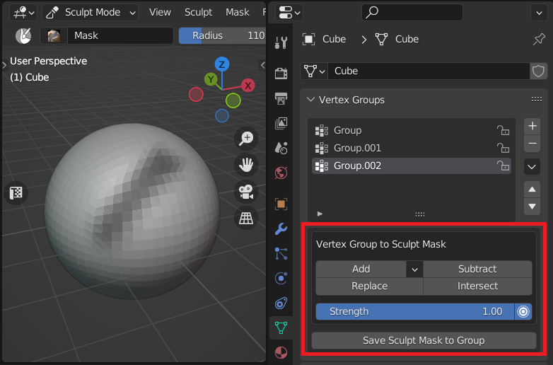
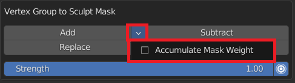
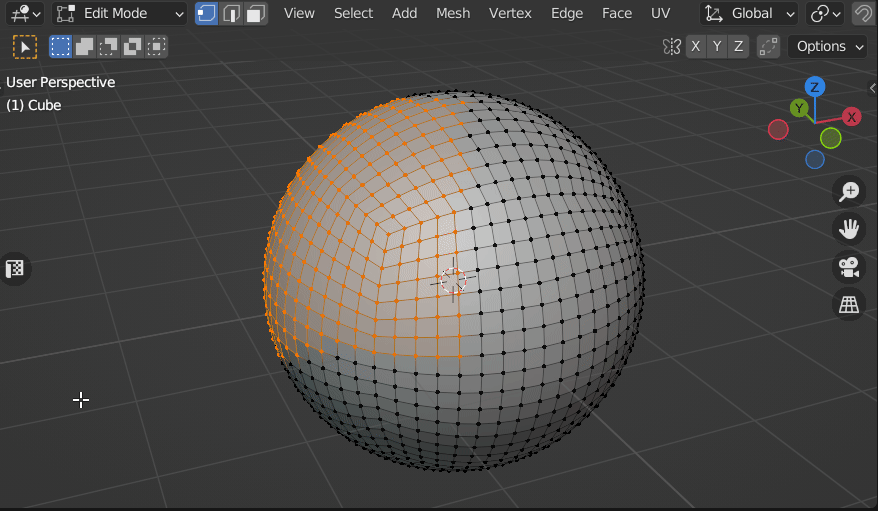
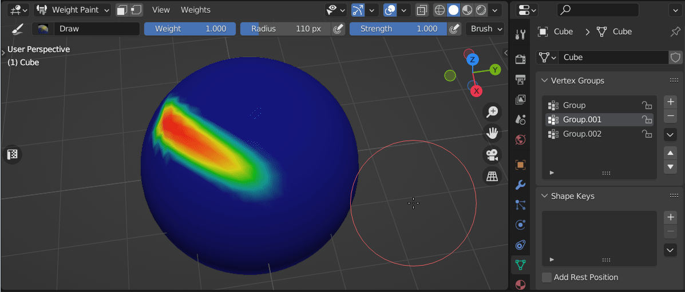

Sculpt Utils
Sculpt Vertex Groups Masks Panel
Enhances sculpt mask operations in sculpt mode. Gives an option loading or saving masks to vertex groups.
|  |
|---|
Add
Adds current vertex group weights multiplied by strength to sculpt mask
|  |
|---|
| Accumulate Mask Weight |
| Disable limiting mask weight to maximum of current value and vertex group weight |
Replace
Replace sculpt mask with current vertex group weights multiplied by strength
Subtract
Subtract current vertex group weights multiplied by strength from sculpt mask
Intersect
Intersect sculpt mask with current vertex group by multiplying mask and vertex group weights
Save Sculpt Mask to Group
Overwrite current Vertex Group with sculpt mask
Sculpt Toolbar Panel
 |
|---|
Set Sculpt Mask by Editmode Selection
|  |
|---|
Set Sculpt Mask by current Vertex Group
|  |
|---|